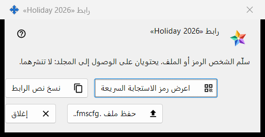
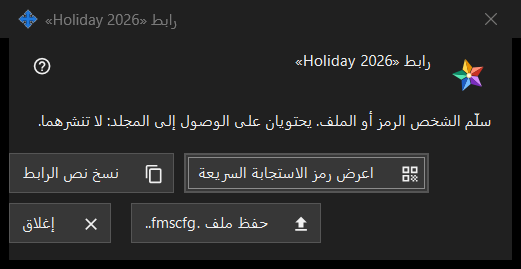

رابط لمجلد
الغرض من هذه النافذة
يسلّم مجلدًا منشورًا واحدًا إلى شخص ليس لديه حساب على خادم التبادل: على شكل رمز QR ونص رابط وملف .fmscfg. تُفتح النافذة بعد إنشاء رابط.. أو رابط جديد.. في مجموعة مجلداتي المشتركة في حساب التبادل، وكذلك من إظهار QR / الرمز.. في نافذة منح وصول خارجي.. الخاصة بالمجلد. في البرنامج الحالي الأمران معطّلان لأن الوصول للأشخاص من خارج الحساب غير متاح؛ وتصف هذه الصفحة ما تعرضه النافذة عندما يوجد رابط.


بهذا الترتيب
- اختر مجلدًا منشورًا واضغط إنشاء رابط.. (أو رابط جديد.. لاستبدال رابط قديم).
- اقرأ الملاحظة في أعلى النافذة.
- سلّم الرابط بأحد الأزرار: حفظ ملف .fmscfg.. أو نسخ نص الرابط أو اعرض رمز الاستجابة السريعة.
- اضغط إغلاق.
عناصر النافذة
متى تتوفر النافذة
توجد النافذة فقط لرابط أُنشئ للتو أو موجود بالفعل. وما دام الوصول للأشخاص من خارج الحساب غير متاح، يكون الأمران إنشاء رابط.. ورابط جديد.. معطّلين، وتذكر ملاحظة أسفلهما السبب، ولا تُفتح النافذة؛ كما أن إظهار QR / الرمز.. معطّل أيضًا. أما حذف الرابط فيبقى متاحًا.
الملاحظة في الأعلى
تقول الملاحظة: سلّم الشخص الرمز أو الملف. يحتويان على الوصول إلى المجلد: لا تنشرهما. من يملك رمز QR أو نص الرابط أو الملف يستطيع فتح ذلك المجلد. ولا يُعرض نص الرابط على الشاشة أبدًا.
اعرض رمز الاستجابة السريعة
يفتح صورة رمز QR في نافذة تكبير. لا يظهر الزر إلا إذا أمكن إنشاء رمز QR؛ وإذا كان نص الرابط أكبر من أن يتسع في رمز QR فالرد هو: الرمز كبير جدًا بحيث لا يتسع في رمز QR - استخدم الملف.
نسخ نص الرابط
يضع نص الرابط (يبدأ بـ FMSSFTP2:) في الحافظة عبر مسار محمي يُبقيه خارج سجل حافظة Windows والحافظة السحابية، ويردّ: تم نسخ نص الرابط. لا يظهر الزر إلا إذا كان للرابط نص.
حفظ ملف .fmscfg..
يحفظ ملف إعدادات لهذا المجلد وحده، ولا يستطيع قراءته إلا مالكه. تُبلغ النافذة بإحدى رسالتين: تم حفظ الملف: يليها المسار، أو تعذّر حفظ الملف. لا يظهر الزر إلا إذا أمكن إنشاء الملف.
رابط جديد وحذف الرابط
كلاهما يتبع المجموعة لا هذه النافذة، وكلاهما يسأل أولًا والجواب الافتراضي هو لا: رابط جديد.. يحذّر من أن كل رموز QR والملفات السابقة ستتوقف عن العمل، وحذف الرابط يحذّر من أن كل رموز QR والملفات الموزعة معه ستتوقف عن العمل.
إغلاق
يغلق النافذة ويُسقط منها نص الرابط ومحتوى الملف وصورة رمز QR.